Certificates/Grades

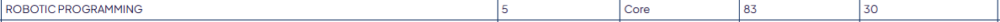
This page follows the progress of my Embedded Programming learning path. It will track everything I complete to learn the Embedded Programming. I have experience with embedded programming as I have comepleted 2 seperate projects using STM microcontrollers. One of these projects is my Final Year Project (which can be downloaded below). I came across problems with the Pulse Sensor and I2C within my project therefor these will be my main focus during this period of study.
Take a Look at my FYP

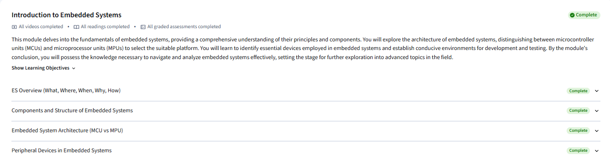
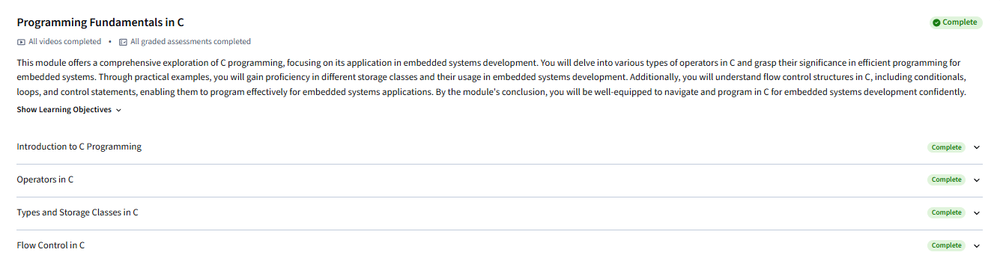
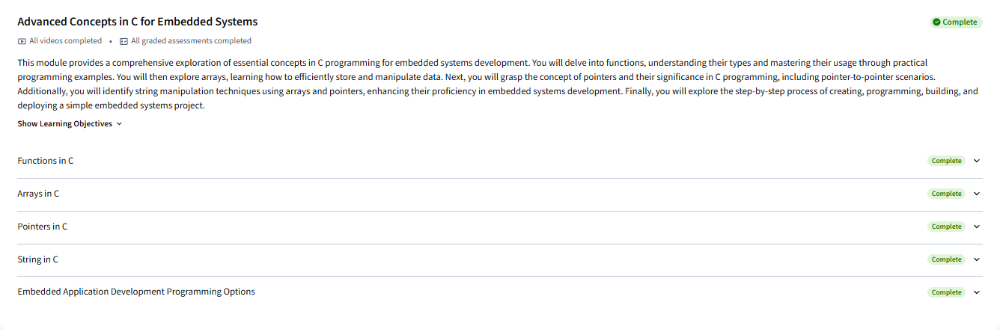
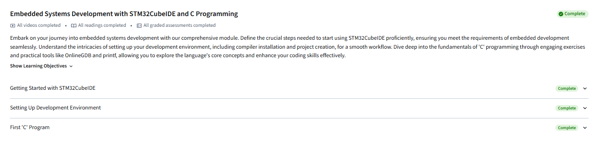
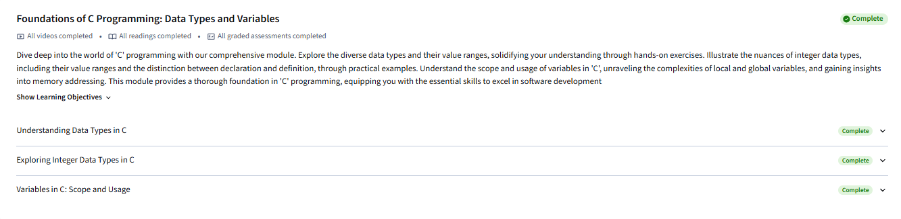
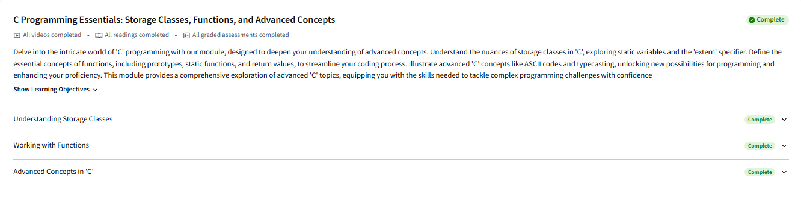
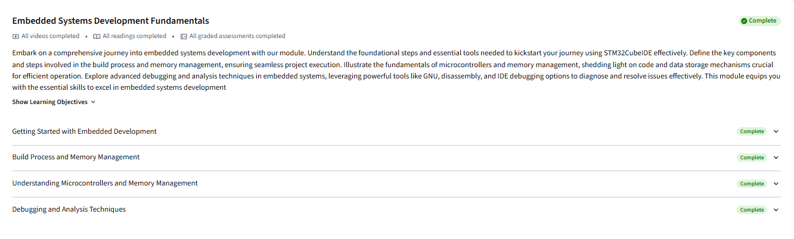
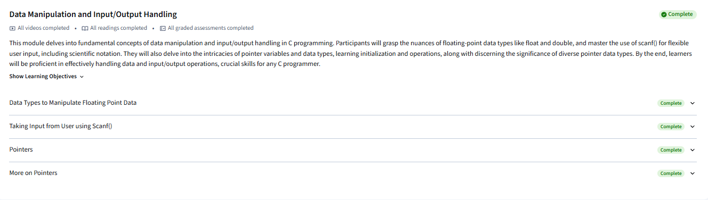
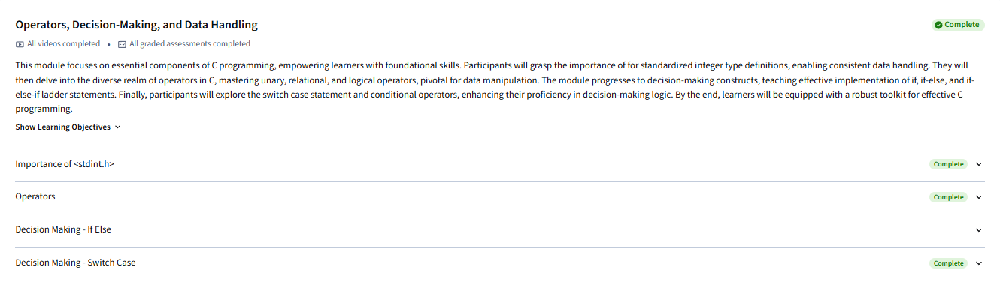
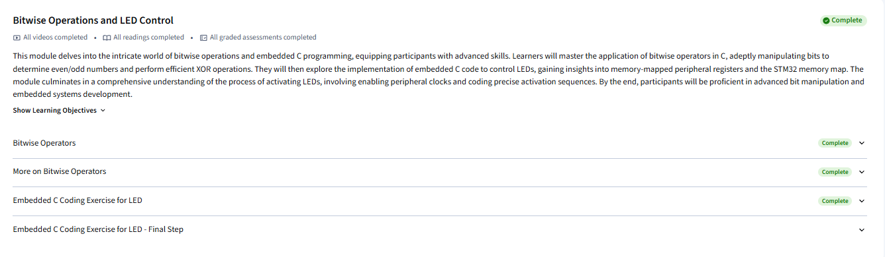
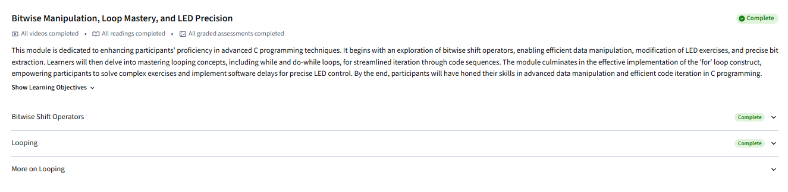
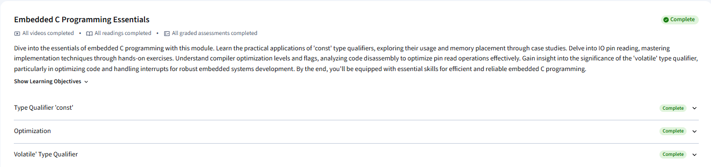
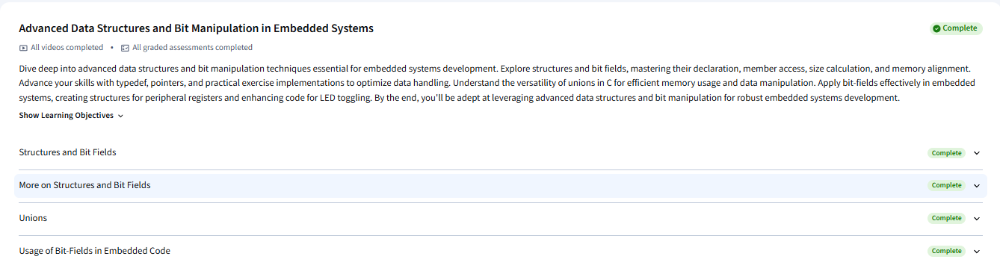
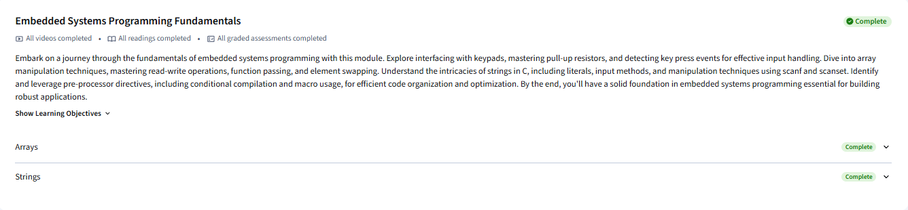